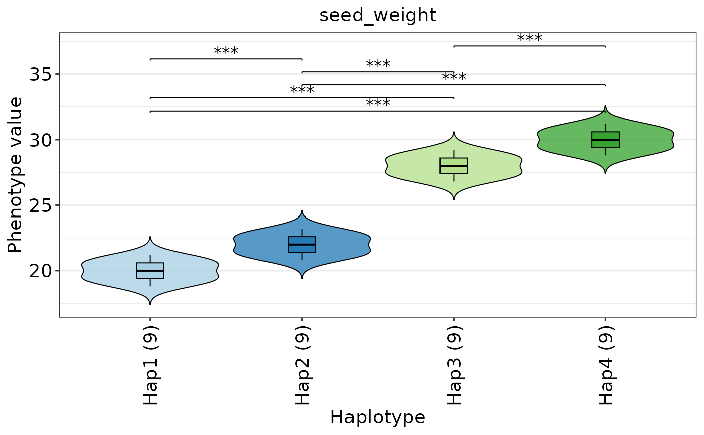
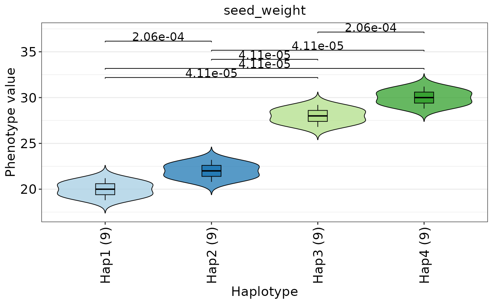

Merges haplotype assignments and phenotype values, then draws phenotype distributions for each haplotype. Haplotype groups are ordered by sample number from left to right. Fill colors are mapped to the median phenotype value of each haplotype group.
Usage
plot_hap_pheno(
hap,
phenotype,
traits = NULL,
sample_col = "sample_id",
min_hap_samples = 2L,
plot_type = c("violin_boxplot", "violin", "boxplot"),
test_method = c("t.test", "wilcox.test", "ks.test"),
p_adjust = "BH",
p_label = c("stars", "number", "both"),
p_cutoff = 0.05,
p_value_type = c("raw", "adjusted"),
show_signif_only = TRUE,
show_points = FALSE,
show_outliers = FALSE,
fill_palette = "Paired",
fill_colors = NULL,
fill_alpha = 0.75,
violin_width = 0.9,
box_width = 0.18,
bracket_step = 0.08,
bracket_tip_fraction = 0.12,
x_text_angle = 90,
facet_ncol = 3L,
strip_label_width = 24,
strip_text_lineheight = 0.9,
strip_fill = "white",
strip_border_color = NULL,
text_size = 14
)Arguments
- hap
A HapVariant object from
hap_variant().- phenotype
A phenotype table returned by
read_pheno()or a compatible data.frame.- traits
Phenotype trait names. If NULL, all numeric traits are used.
- sample_col
Sample column name in phenotype table.
- min_hap_samples
Minimum sample number required for a haplotype group.
- plot_type
Plot type. One of
violin,boxplot, orviolin_boxplot.- test_method
Pairwise test method. One of
t.test,wilcox.test, orks.test.- p_adjust
P-value adjustment method passed to
p.adjust().- p_label
P-value label style. One of
stars,number, orboth.- p_cutoff
Significance cutoff used for displaying pairwise comparisons.
- p_value_type
Which p-value is used for filtering and labeling. One of
raworadjusted.- show_signif_only
Logical. Whether to only display significant comparisons.
- show_points
Logical. Whether to show sample points.
- show_outliers
Logical. Whether to show boxplot outliers.
- fill_palette
RColorBrewer palette name used for median-based haplotype fills.
- fill_colors
Optional custom fill colors for haplotypes.
- fill_alpha
Alpha value for violin/boxplot fill colors.
- violin_width
Violin plot width.
- box_width
Boxplot width.
- bracket_step
Fraction of y-range used to separate significance brackets.
- bracket_tip_fraction
Fraction of bracket vertical spacing used for the short downward bracket tips.
- x_text_angle
Rotation angle for haplotype labels on the x-axis.
- facet_ncol
Maximum number of facet columns when multiple traits are plotted.
- strip_label_width
Maximum character width for wrapping long facet strip labels.
- strip_text_lineheight
Line height for wrapped facet strip labels.
- strip_fill
Facet strip background fill color.
- strip_border_color
Facet strip border color. Use NULL to remove the border.
- text_size
Text size.
Value
A list with figure and pvalue elements. Additional elements include summary, bracket, and plot_data.
Examples
vcf_file <- system.file("extdata", "gtr_demo_variants.vcf", package = "GeneTrackR")
anno_file <- system.file("extdata", "gtr_demo.genePredExt", package = "GeneTrackR")
pheno_file <- system.file("extdata", "gtr_demo_pheno.tsv", package = "GeneTrackR")
vcf <- read_vcf(vcf_file, mode = "memory", verbose = FALSE)
anno <- read_genepred(anno_file, format = "genePredExt", verbose = FALSE)
hap <- hap_variant(vcf, annotation = anno, gene_id = "GeneA", genotype_mode = "code", min_variant_number = 1)
#> [GeneTrackR] Retrieved variants: 11.
pheno <- read_pheno(pheno_file, verbose = FALSE)
plot_hap_pheno(hap, phenotype = pheno, traits = "seed_weight", min_hap_samples = 3)

plot_hap_pheno(hap, phenotype = pheno, traits = "seed_weight", min_hap_samples = 3,
test_method = "wilcox.test", p_label = "number")
